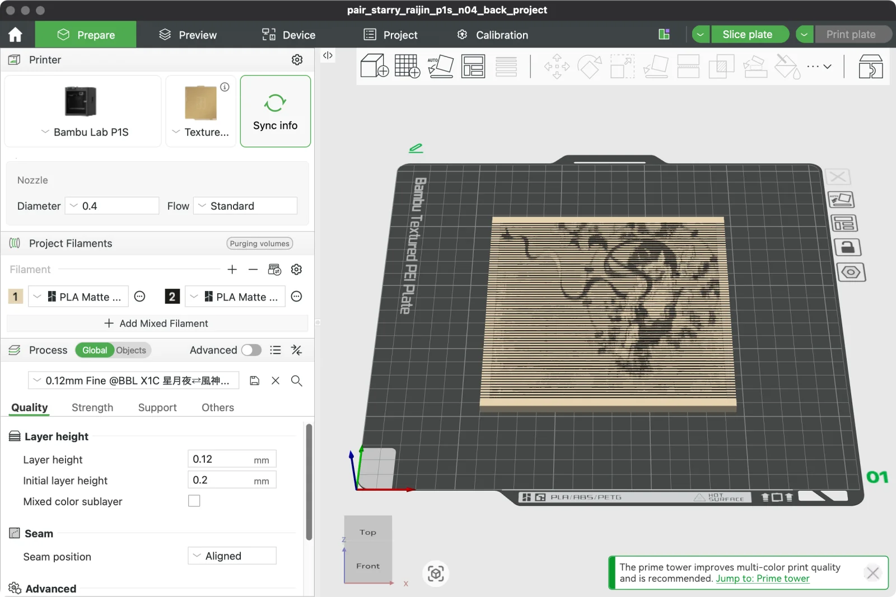

ENGRAVED METAMORPHOSIS · 線刻の変身画
赤富士が、鏡の中で
真珠の耳飾りの少女になる
直方体の上面に細い溝を 136 本彫り、墨を入れただけの立体です。手前から見ると葛飾北斎「凱風快晴」、後ろに立てた鏡の中ではフェルメール「真珠の耳飾りの少女」が、線刻の版画として浮かび上がります。塗りは地色と墨だけで、見る向きによる塗り分けはありません。絵が入れ替わるのは、溝の立体的な形のためです。
家庭用の 3D プリンター（Bambu Lab P1S）で刷れるように最適化した設計です。大きさ 110 × 150 × 20 mm（長辺 15 cm）、溝の幅と溝の間の壁の厚さはノズルに合わせてあり、サポートなしで刷れます。造形データはページの下からダウンロードできます。
おまけ：同じ手法の 2 枚組「星月夜 ⇄ 雷神」「ローヌ川の星月夜 ⇄ 風神」をページの最後に追加しました。鏡の中に、俵屋宗達の風神雷神図屏風が現れます。
一周させて見る
手前から見ると、鏡の中では



赤富士の版と違い、溝は等間隔で、上面の起伏はほぼありません（±0.3 mm）。明暗は、溝と溝の間の面の「見かけの幅」だけで描きます。面の手前の縁と奥の縁の高さを少し変えると、手前での見かけの幅と鏡での見かけの幅を別々に決められるので、片方の絵はもう一方にほとんど透けません。色と筆のタッチで描かれた星月夜の渦や星も、この方式で出せるようになりました。溝の間の面の見かけの幅は、手前・鏡それぞれ線の間隔の 18〜82 % の範囲で決めています。最初に公開した版（26〜74 %）より、明暗の差がはっきり出ます。1 枚の大きさは 135.7 × 150 mm（長辺 15 cm）、厚さ 5 mm の薄い板で、刷る時間は 1 枚約 2 時間半（0.4 mm ノズル・単色）です。溝の幅と溝の間の面の幅はノズルに合わせてあるので、15 cm にしたぶん溝の本数が減り、線は最初の版（長辺 24 cm）より粗くなっています。
| 0.4 mm ノズル用（標準） | 0.2 mm ノズル用 | |
|---|---|---|
| 大きさ（1 枚） | 135.7 × 150.0 × 5.2〜5.3 mm | 135.7 × 150.0 × 4.9〜5.0 mm |
| 絵の部分（見かけ） | 126 × 99 mm | |
| 溝 | 73 本・等間隔・深さ 1.0 mm | 121 本・等間隔・深さ 0.8 mm |
| 最も細い溝 / 溝の間の面 | 0.50 mm / 0.50 mm | 0.35 mm / 0.30 mm |
| 工程・積層ピッチ | 0.12mm Fine・0.12 mm | 0.08mm High Quality・0.08 mm |
| 造形時間・材料の目安（1 枚） | 単色 約 2 時間 15 分〜2 時間半・66 g、AMS 2 色 約 4 時間半 | 単色 約 10 時間半・57 g |
| 設定 | Arachne・インフィル 15 %・サポートなし・外側ブリム 3 mm（単色）・明るい色のマット PLA | |
- 実寸で設計しています。スライサーで拡大・縮小しないでください。
- 置き方：彫った面を上にして平らに置きます（Bambu Studio 用のプロジェクトでは台の中央に置いてあります）。
- AMS で 2 色に刷る場合：プロジェクト 3MF を開くと、溝が黒・地がベージュに塗られています。そのままスライスでき、墨入れが要りません。単色で刷った場合は、赤富士の版と同じく溝に墨を入れます。
- Bambu Studio で鏡の中の像を見るには：視点を板の奥側に回し、斜め 45° ほど上から見下ろします。雷神・風神が見えます（鏡を通さず奥から直接見るので、左右は反転しています）。
- 確認してほしいこと：Bambu Studio でスライスして警告が出ないこと、G-code 上で溝がふさがらないことは確かめましたが、実物はまだ刷っていません。